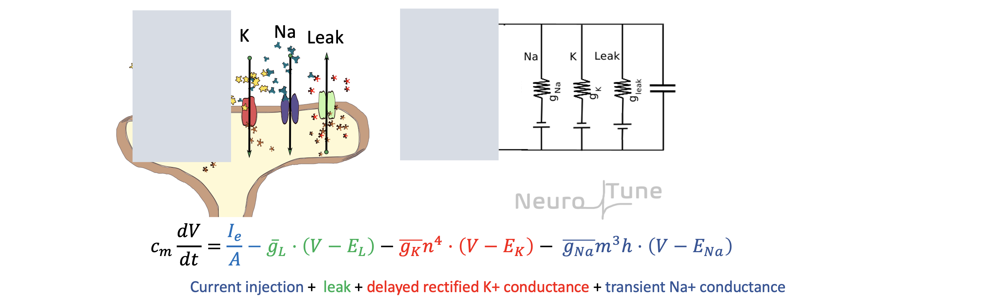
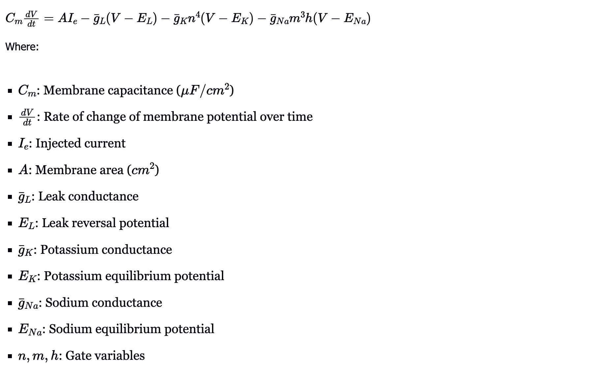

The Hodgkin-Huxley equation describes the membrane potential (denoted as V) of a neuron as a function of time.
The equation is:

Components of the Model
The Hodgkin-Huxley equation takes into account four main types of ion conductances that determine the membrane potential and the action potential characteristics:
1. Current Injection (I_e): This represents an external current that is injected into the neuron. It is the driving force for the action potential. The current I_e may be used to simulate stimulus or electrical input to the neuron.
2. Leak Conductance (g_L) The leak current represents the flow of ions through leak channels in the membrane. These channels allow ions to move passively, even when the neuron is not actively sending signals. The leak reversal potential is E_L where the leak current is zero.
3. Delayed Rectifier Potassium Conductance This component models the behavior of potassium channels. Potassium ions (K+) are critical in restoring the membrane potential after an action potential. The activation of potassium channels is represented by the variable n, which is raised to the power of 4 (n4) to reflect the multiple gates that open for potassium flow. As the membrane depolarizes, more potassium channels open, allowing K+ ions to leave the cell.
4. Transient Sodium Conductance (g_Na) Sodium ions (Na+2) flow through sodium channels during an action potential. These channels are initially activated by depolarization and then inactivated as the membrane potential changes. The variables n and h represent the activation and inactivation of sodium channels. m3h gives the probability of sodium channels being open.